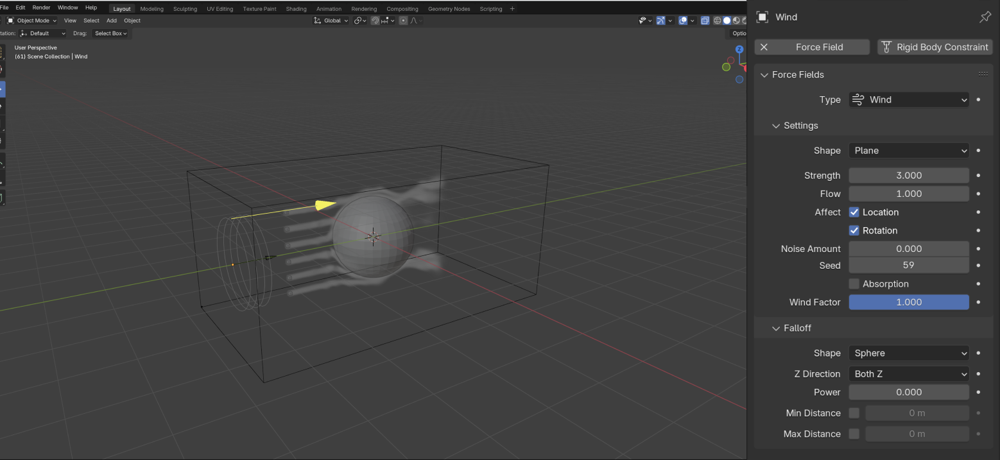

Explore Fluid and Force Field
Blender provides Gas or smoke simulations. These are a subset of the fluids system, and can be used for simulating collections of airborne solids, liquid particulates and gases, such as those that make up smoke. It simulates the fluid movement of air and generates animated Voxel textures representing the density, heat, and velocity of other fluids or suspended particles (e.g. smoke) which can be used for rendering.
Gases or smoke are emitted inside of a Domain from a mesh object or particle system. The smoke movement is controlled by airflow inside the domain, which can be influenced by Effector objects. Smoke will also be affected by the scene’s gravity and force fields. Airflow inside the domain can affect other physics simulations via the Fluid Flow force field.

The Wind force field gives a constant force in a single direction, along the force object’s local Z axis. By driving the Flow with this, we can achieve the Blowing effect.
Explore Geometry Nodes
Geometry Nodes is a system for modifying the geometry of an object with node-based operations. It can be accessed by adding a Geometry Nodes Modifier. The geometry node tree connected to a modifier is a Node Group. The geometry from the state before the modifier (the original geometry or the result of the previous modifier) will be passed to the Group Input node. Then the node group can operate on the geometry and pass an output to the Group Output node, where it will be passed to the next modifier. Simply put, my understand is Geometry Nodes allow you to generate models through programming logic instead of the traditional method of combining vertices, edges, and faces.
Simulation zones allow the result of one frame to influence the next one. That way even a set of simple rules can lead to complex results, with the passing of time. The most common type of them is physics simulation, with specific solvers for physical phenomena. By using these two features and following CGMatter's tutorial, we can achieve a particle effect similar to blowing.
Explore Rigid Body
The rigid body simulation can be used to simulate the motion of solid objects. It affects the position and orientation of objects and does not deform them. This also means that by adding rigid body properties to objects, they can be affected by the wind field, simulating a realistic blowing effect.
How to Perform Blowing
The first form I thought of is the wind tunnel test for cars, where visible wind is blown onto the car to test its aerodynamics. Since the action of blowing often refers to wind, my idea is to use this form of wind tunnel testing to visualize the wind force and show the impact it has on objects in the scene.
Process to Final Deliverable
Since my theme will include the element of a car, the first thing I need to do is find some car resources online and convert them into usable formats. For example, in this situation, it’s best to merge all the car parts into one object to ensure they move as a whole. Additionally, I will add a Rigid Body to the car body so it can be influenced by external forces.
The next step is to integrate everything together. Here, I created a demo video to showcase and review the project at its midway point. You can see that I added another car to the scene to collide with the first one, enhancing the visual effect of the impact caused by the wind. The feedback I received was to cover the entire scene with fog and have the wind blow the fog instead of just a few puffs of smoke blowing forward. In addition, improving the scene and making the animation take place in a complete environment will enhance immersion, allowing the audience to better experience the sensation of "blowing."

In the final iteration, I learned how to convert the HDRI background into an actual scene. This was done to avoid constantly searching for specific angles to match the HDRI when setting up the camera. Since the car should always be on the ground, the light and shadow between the car and the ground are also crucial. Additionally, as suggested, I added fog to the scene and used animation to control its movement.
Reflection
This is my first time using Blender for modeling and animation, and what impressed me the most is the use of nodes in Blender. By adding and connecting different nodes, you can indeed control models and animations with more precision. It feels more like a coded logic. Plus, Blender comes with many built-in attributes that help simulate reality. I currently believe that if your goal is to create video animations without complex interactions, Blender seems like the right and accessible choice for beginners. Of course, aside from technical discussions, it's been fascinating to see the different forms of expression people have used for different verbs throughout the project cycle. In my view, everyone’s exploration of simulation in modeling or game engines is essentially a restructuring of reality. We constantly adjust gravity, wind, behaviors, logic, materials, etc., and eventually even add artistic touches on top of reality, beginning to experiment with anti-simulation. This actually brings us back to the original topic of this project: What is the meaning of simulation? It can be an imitation of reality, functional, or artistic. These attributes do not interfere with each other, and the same model can present different effects through different edits. Take my own project as an example: Throughout the design process, we can see multiple possibilities. It can be a traditional wind tunnel test, or it can be a scene model.